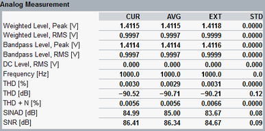
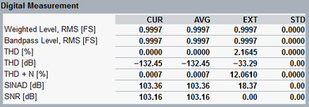
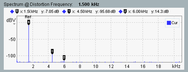

For a harmonics measurement, a fixed frequency sine wave audio test tone (single tone) is transmitted. Harmonics are signals at an integer multiple of the fundamental frequency. The nth harmonic is n times the frequency of the fundamental wave. The production of harmonic frequencies by an electronic system is known as harmonic distortion.
- Signal S: power of the audio signal at the configured reference frequency, see "Filter > Distortion Frequency"
- Distortion D: sum of the signal powers of the 2nd, 3rd, 4th ... harmonics
The R&S CMW measures up to 10 harmonics at frequencies up to 21 kHz. - Noise N: power of the noise floor
The sum of all three components S + N + D is the total received audio power. S and D can be obtained in frequency-selective measurements. To obtain the sum N + D, the R&S CMW uses a notch filter to eliminate the fundamental wave. To avoid suppression of the higher harmonics, the bandwidth of the notch filter is automatically adjusted to be smaller than the reference frequency.
Most results of a single tone measurement are calculated from the measured S, N and D. The following figures show the result tables of an analog measurement and of a digital measurement.


- "Weighted Level Peak/RMS":
Level of the AC component of the AF signal, measured in the weighting filter path.
The RMS-averaged effective value is provided. For analog measurements, the peak value is also provided. - "Bandpass Level Peak/RMS":
Level of the AC component of the AF signal, measured in the bandpass filter path.
The RMS-averaged effective value is provided. For analog measurements, the peak value is also provided. - "DC Level":
DC component of the measured analog AF signal in V - "Frequency":
Frequency of the measured analog AC signal - "THD":
Total harmonic distortion, ratio of the harmonic distortion voltage to the fundamental wave voltage, in percent and as dB value.
THD (in %) = sqrt (D / S) * 100
THD (in dB) = 20 * log (sqrt (D / S)) = 10 * log (D / S)
The R&S CMW displays THD percentage values up to 100 %. A result close to 100 % can indicate incorrect settings, e.g. a specified reference frequency which differs from the actual frequency of the transmitted test tone. - "THD + N":
Total harmonic distortion and noise, ratio of the measured AF signal voltage with a notched-out fundamental wave to the complete measured AF signal voltage, in percent.
THD + N (in %) = sqrt (N + D) / sqrt (S + N + D) * 100 - "SINAD":
Signal to noise and distortion, ratio of the complete measured AF signal voltage to the measured AF signal with a notched-out fundamental wave, as dB value.
SINAD (in dB) = 20 * log (sqrt (S + N + D) / sqrt (N + D)) - "SNR":
Signal to noise ratio, ratio of the signal power to the noise power, as dB value.
SNR (in dB) = 20 * log (sqrt(S / N)) = 10 * log (S / N)
The table columns provide a statistical evaluation of the results, see "Statistical results".
- Maximum: THD, THD + N, frequency, weighted level, bandpass level
- Minimum: SINAD, SNR
- Maximum or minimum, whichever has the larger magnitude: DC level
The single tone measurement provides also a spectrum diagram. The measurement of spectrum results can be enabled via the softkey/hotkey combination "Analog/Digital Meas" > "Spectrum Off/On" and via the single tone measurement settings, see "Spectrum > Off / On".

The diagram shows the measured audio level vs. the frequency. The results are measured in the time domain and transformed to the frequency domain via a fast Fourier transform (FFT). Before the FFT, a configurable window function is applied to the raw data to reduce side-effects of the FFT. For selection of the window function, see "Filter > Window Function".